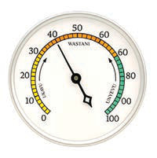
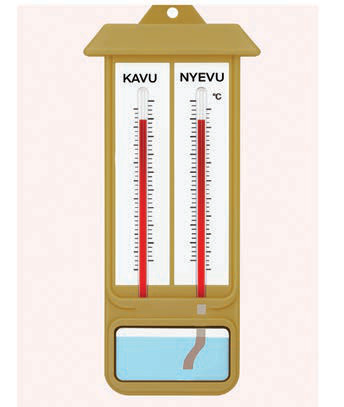

Unyevuanga
Unyevuanga ni kiwango cha mvuke katika angahewa. Joto la jua husababisha maji kuvukizwa kutoka katika mimea, uso wa bahari, maziwa, mito na maeneo mengine yenye maji na kutengeneza mvuke katika angahewa. Kiwango cha unyevuanga huongezeka au hupungua kutegemea na kuongezeka au kupungua kwa jotoridi la sehemu husika. Unyevuanga hupimwa katika asilimia (%) na kifaa kinachotumika kupima unyevuanga kinaitwa haigrometa. Kifaa hiki hupima asilimia ya unyevu uliopo katika angahewa.
Zipo aina tatu za haigrometa. Aina ya kwanza ni haigromita ya mshale ambayo hupima unyevuanga na kuonesha asilimia za mvuke uliopo katika hewa kwa kutumia mshale. Aina ya pili ni haigrometa kavu na nyevu, ambayo hujumuisha vipimajoto viwili (kipimajoto kavu na kipimajoto nyevu) ndani ya mrija mmoja. Kipimajoto kavu hupima joto la hewa na kipimajoto nyevu chenye kitambaa cha muslin kilichozamishwa kwenye maji hupima unyevuanga. Aina ya tatu ni haigrometa ya kidijitali, ambayo inatoa vipimo vya unyevuanga kidijitali. Aina hizi zimewasilishwa katika Kielelezo namba 5.


Pimajoto kavu
Pimajoto nyevu
Kikasha chenye maji
Kitambaa cha wavu/muslin
Pimajoto kavu
Kikasha chenye maji
Pimajoto nyevu
Kitambaa cha wavu/muslin
Kielelezo namba 5: Aina za haigrometa